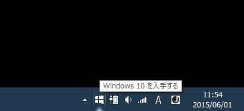
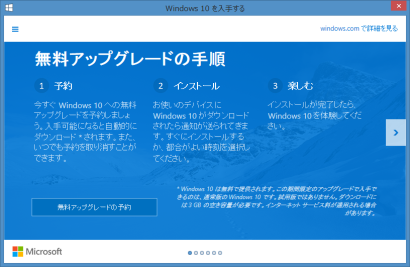

Windows 10は7月29日リリース、Windows 7/8.1ユーザーに対する無料アップグレードの通知も始まる 83
ストーリー by headless
発表 部門より
発表 部門より
Windows 10のリリース日が7月29日と発表された。Windows 7/8.1ユーザーに対する、Windows 10無料アップグレードの通知も始まっている(Blogging Windowsの記事、
VentureBeatの記事)。
通知表示は以前話題になった更新プログラムKB3035583によるもので、対象のWindowsを起動すると通知領域にWindowsアイコンが表示される。このアイコンをクリックすると手順を紹介するウィンドウが開き、「無料アップグレードの予約」をクリックすれば無料アップグレードを予約できる。また、Windows Updateにも通知が表示され、こちらから予約することも可能となっている。
無料アップグレードを予約しておけば、7月29日になると自動的にダウンロードが実行される。ダウンロードが完了すると通知が表示されるので、すぐにインストールするか、都合のいい時刻を指定してインストールするかを選択できる。なお、メニューから「確認の表示」を選び、「予約の取り消し」をクリックすることで、予約はいつでも取り消し可能だ。
通知表示は以前話題になった更新プログラムKB3035583によるもので、対象のWindowsを起動すると通知領域にWindowsアイコンが表示される。このアイコンをクリックすると手順を紹介するウィンドウが開き、「無料アップグレードの予約」をクリックすれば無料アップグレードを予約できる。また、Windows Updateにも通知が表示され、こちらから予約することも可能となっている。
無料アップグレードを予約しておけば、7月29日になると自動的にダウンロードが実行される。ダウンロードが完了すると通知が表示されるので、すぐにインストールするか、都合のいい時刻を指定してインストールするかを選択できる。なお、メニューから「確認の表示」を選び、「予約の取り消し」をクリックすることで、予約はいつでも取り消し可能だ。

KB3035583のインストールされたWindowsを起動すると、通知アイコンが表示される

「無料アップグレードの予約」をクリックすれば、7月29日にWindows 10を入手可能になる
DSPやメーカー製PCのサポートは (スコア:2)
タダだからと気軽にアップグレードしたら最後、メーカーサポートが無くなるのではないか？
アップグレード保証するメーカーもあるだろうけど、要確認だな。
8月以降、トラブった一般ユーザーや企業がサポート受けられず阿鼻叫喚にならないと良いが……。